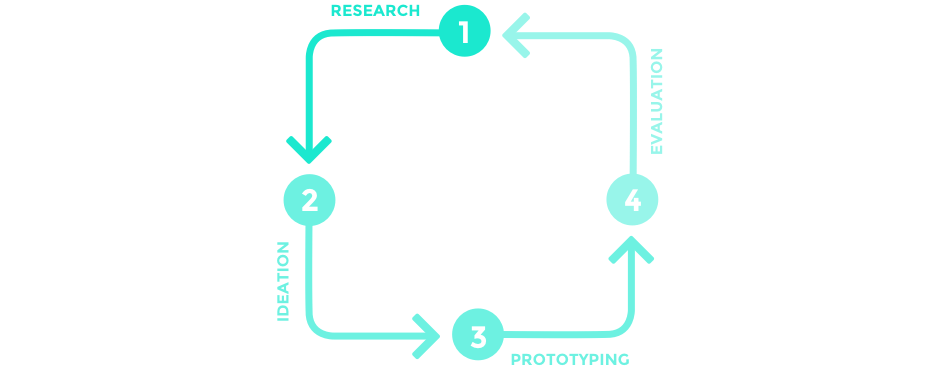
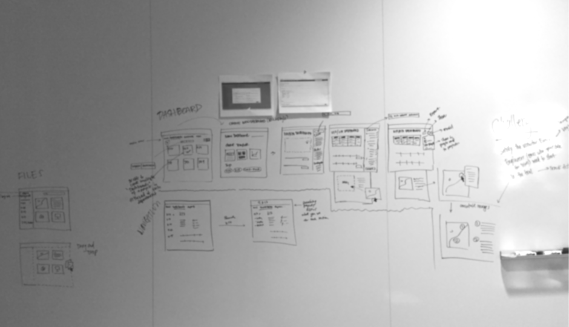
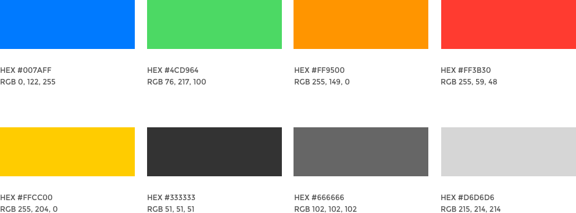
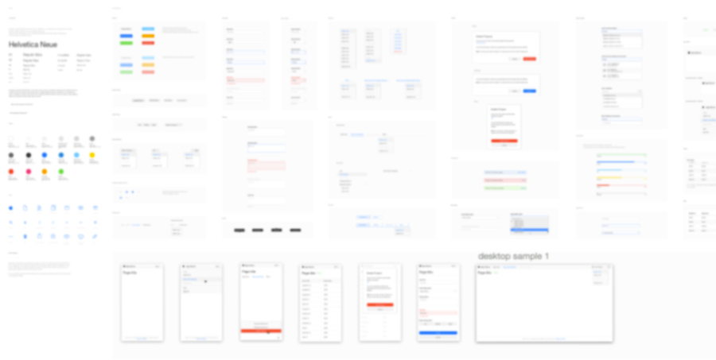

Introduction
This project is under NDA (non-disclosure-agreement). Only process related information can be exposed. To comply with my confidentiality agreement I have omitted and appropriated confidential information. These designs are a reinterpretation of the original.
My role
This was a team project working with one of the biggest worldwide technology companies on the design of a system application tool using Agile methodologies. My main role in this project was to help build a consistent UI Pattern Library built on top of the Bourbon and Ember.js frameworks, as well as a reusable set of accessible and content oriented markup patterns. This UI Library was incorporated into multiple web applications used by more than 20,000 users.
Tools and technologies
Pen & paper, Balsamiq, Axure, OmniGraffle, Sketch, Photoshop and Illustrator for wireframes and prototypes. XMind for mindmaps. HTML5, CSS3, Sass, Less, Bourbon, Neat, Ember.js, Sublime Text for coding. VoiceOver, Color Oracle to validate accessibility. Keynote for presentations. Jira and Confluence for documentation.

Design Cycle
The project adopted a User Center Design and Agile Requirements approach to structure the process of design and development, allowing both teams to be connected. As a result, the requirements were raised and stable in a timely manner, resulting in a cyclical development proccess of 3 cycles.
1st Cycle: Focused on the Theme
Understand the big picture. Research based only. No user tests needed at this point.
2nd Cycle: Focused on the Epics
Start deep diving on the verticals. User tests are important.
3rd cycle: Focused on the stories
High level of detail. User tests are expected.
To deconstruct a large design into smaller pieces, it is essential to start with well- defined design goals and to understand the high-level design intent. - Desirée Sy on Adopting Usability Investigation for Agile User-centered Design, 2007
The team was able to project complex features with focus on the end user in two-weeks sprints. To achieve this, I worked in a different flux and one sprint ahead the development team. In addition, designers were part of the planning and constantly supported the dev and QA teams during the development process (4: Evaluation).
A serie of methods were employed across different phases of the project, such as:
Wireframe Prototyping
We opted for a lean approach which emphasized rapid sketching, prototyping, user feedback and mockups. This created early team‐wide alignment, stimulated great ideas and created a strong sense of ownership across different disciplines within the organisation.
I generated rapid-prototyping user experience, high-fidelity mockups, interactive web and mobile prototypes through a mix of paper, Axure, Balsamic, Graffle, Sketch, Illustrator and Photoshop, allowing the design team to tangibilize ideas.
Internal presentations and testing were performed on a daily basis during UI/UX sync-up meetings with design teams in Brazil and remotely. Those moments helped to validate early designs through contextual interview, and to make decisions on the fly. In addition, with wireframe and mockups in hand the development team could estimate the stories more accurately.
Requirement Analysis
Meeting with key stakeholders, PO and the UX team helped to understand the business challenges. Together we aligned the expectations and constructed a shared vision for the project. Following this, I analyzed requirements and estimated the UI development efforts, and planned the implementation of components during a design sprint according to the features developed during an epic.
I entered all the requiremets into a spreadsheet and prioritized them againts our user needs, technical feasibility, and roadmap. I wrote user stories, acceptance criteria, and prioritized backlog based on the project objectives. At the end of the design phase, I ensured that the project requirements met the documented acceptance criteria.
High fidelity mockups and User Interface design
The user stories and understanding of the core functionalities of the application were fundamental to develop the look and feel of the components. I started generating UI options using Sketch as soon as our team came up with the need of a new component, constantly syncing gather feedback still during the first cycle of the development process.

System icons were inherited from a meaningful SVG library provided by one of the client’s internal design teams, to secure consistency between our UI library with the high-quality level graphics users are accustomed to.
Color helps indicate interactivity, impart vitality, and provide visual continuity. We used a family of pure, clean colors that look great individually and in combination, and on both light and dark backgrounds.
The final designs and components were documented in a design library kept on Sketch. The design team used it to build new mockups, which inluced stylistic guidelines for typography, grids and color. I was responsible for keeping this Sketch library updated so that the interface could be later on translated into a UX library built on Axure.
User Interface engineering
Most parts of the designs were collaboratively authored using GitLab. With hands-on coding using HTML5, CSS3 (SASS and LESS), and the 'Block, Element, Modifier' (BEM) methodology, I transformed the components designs into code and validated together with the development team the necessary pieces of markup used to build the templates for the Ember components.
The code guidelines were kept in a collaborative library, while patterns were incorporated into a more holistic style guide with UI concepts and branding recommendations. The library was constantly updated as our team designed and defined the necessary requirements for new components.
I was also responsible for doing code review on GitLab of the markup and CSS built by the development team during the development sprint. Getting feedback in an early phase allowed the team to have context and structure of the code while it is fresh in their minds, and helped to catch mistakes before production. Using GitLab's comment feature for commits to make comments about the pushed code, I ensured that the coding guidelines were being followed and our application was constantly updated with the most recent UI components.
Sharing our knowledge helped to build a strong relationship between design and development teams. We created an environment to share ideas, and during each sprint a FE/UI meeting was scheduled to touch base on the team’s expectations, debate about the best coding approach and set deadlines for the delivery of the coded UI components. As a UI designer/engineer, my role was much more than drawing eye-catching layouts: our way of working allowed to form a partnership between design-aware developers and code-inclined designers.
Web Accessibility
Accessibiliy is at the heart of the client’s products - intuitive and easy to use hardware and software. For this project, I was one of the team members responsible for designing the application's User Interface Guidelines for web accessibility. It was extremely important to advocate and support web accessibility methods as a core step in the software development process, and to not only include accessible features, but also accessible principles into every piece of design.
I coded with semantically meaningful HTML and designed the UI components for impaired users. I widely used ARIA specifications and it was really nice to have the help of an Accessibility Guru in our team to support our coding and interaction decisions.
The use of color was a key point for the team, and we constantly focused on providing colorblind users a meaningful experience since most color blind people have difficulty distinguishing red from green. I tested the interface by using Color Oracle to make sure colors were not the only way users could distinguish states or values and, of course, by using a combination of iconography, text and color to indicate interactive elements.
I also made design considerations and validated the system's accessibility by using assistive technologies.
Documentation
Artifacts from all phases were documented in a form of descriptive memorial so developers were able to work on a second part of the project.